(#event/workshop/machine-learning/links にリンクが貼ってあります)
traP アルゴリズム班 Kaggle部 2023/06/20
毎日 20:00~ (初回のみ21:00~)
第1回 6/20: 学習 第2回 6/21: 勾配降下法 第3回 6/23: 自動微分とPyTorch 第4回 6/27: ニューラルネットワークの構造 第5回 6/28: ニューラルネットワークの学習と評価 第6回 6/30: ニューラルネットワークの実装 第7回 7/04: ニューラルネットワーク発展
機械学習は非常に広大な分野 ⇨ 全7回ではちょっと限界がある
今回の講習会ではディープラーニングについて扱います
にならないようにどちらもバランス良くやります
第1回: 学習 第2回: 勾配降下法 第3回: 自動微分とPyTorch
第4回: ニューラルネットワークの構造 第5回: ニューラルネットワークの学習と評価 第6回: ニューラルネットワークの実装
第7回: ニューラルネットワーク発展
自分のPCにインストール or Google Colaboratoryなどを利用
(そこまで高度なことはやりません)
内容の議論・チェックなど
ありがとうございます
ありとあらゆるところにお気軽になんでも書いてください！ timesに書くときはしれっと「機械学習講習会の...が...」みたいにワードを入れてもらえれば拾います！
前提として、大変
もっと大前提として、質問は迷惑ではないです！ (むしろ聞いてもらえているということなので、うれしい)
(ここだけの話、機械学習はめちゃくちゃおもしろい)
機械学習モデルを構築する上での基本的な用語を整理して、 「学習」ということばをきちんと説明できるようになる。
ChatGPT 自然な対話応答
Stable Diffusion お絵描き
GitHub Copilot プログラミング
etc...
AI(人工知能) 「人間っぽい知能」を実現しようとする分野・あるいは知能そのもの
機械学習(Machine Learning, ML) 様々な情報から「学習」をして動作するアルゴリズム 人工知能の一つのかたちと見られることが多い
⬇︎
機械学習 ⊂\subset⊂ 人工知能 ( ↔\leftrightarrow↔ スーパーカー ⊂\subset⊂ 地上をめっちゃ速く走る )
ここでは一つの定義を紹介しましたが、実際この二つの言葉に明確に定義や合意があるわけではないです。 なので人工知能か人工知能でないか、機械学習かそうではないか、みたいな議論はやや不毛そうです。
↑ 学習って何？
「アイスの売り上げ」は「気温」からある程度わかりそう？
< 来月の売り上げが予想できたらどのくらい牛乳仕入れたらいいかわかって嬉しいな。
データは https://okumuralab.org/~okumura/stat/160118.html から引用
< なんか来月の予想平均気温30度って気象庁が言ってたな。
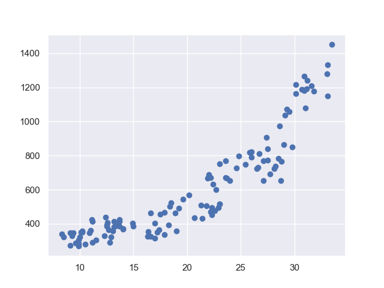 < !!!!!
< 過去に30℃のときは...
一番簡単な方法: 過去の全く同じ状況を参照する
< ガハハ！これでアイスの売り上げを予測するAIの完成や！
<そのまた来月の予想平均気温は40℃です。
< !?
< 40℃ないやんけ
「予測」 ... 入力から出力を求める 今回は、「入力: 気温」 → 「出力: アイスの売り上げ」
入力は知ってるものだけとは限らない
← こいつが本当にやらなくてはいけなかったことは...
このような、入力データを受け取り結果を返すfffをモデルと呼びます。 (厳密に数学的な意味の関数である必要はない)
売り上げ = fff(気温)となる関数fffが、
fff(気温) = a×a \timesa×気温 + bbb
のかたちで表させると仮定して、aaaとbbbを求める。
例) a=20a = 20a=20, b=100b=100b=100 なら アイスの売り上げ =f= f=f(気温) = 20×20 \times20×気温 + 100100100
fffが入力変数の線形結合で表せると仮定して、 y=f(x)y=f(x)y=f(x)の関係を求める作業を「線形回帰」といいます。
ためしてみる
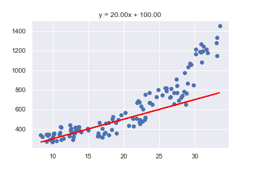 < わるくないね
ためしてみる2 ... a=−30a = -30a=−30, b=400b=400b=400
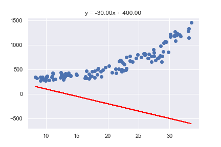 < 帰れ
a,ba, ba,bを変えることでモデルの具体的な形が変わった！
このように各モデルが固有に持ってモデル自身の性質を定める 数を、「パラメータ」という。
は、fffの構造を決めておけば...
a,ba, ba,bを決めよう！
< わるくないね
< ちょっといい？
「良さ」とはなにか？
↓
「悪くなさ」
「悪さ」とはなにか？
「データと予測の遠さ」！
1n∑i=0n−1 (yi−f(xi))2\dfrac{1}{n}\sum_{i=0}^{n-1} \ (y_i - f(x_i))^2 n1i=0∑n−1 (yi−f(xi))2
「悪さ」の指標を「損失関数」という
(どんな複雑なfffでも共通！！！！)
「悪さ」を最小化するのではなく「良さ」を最大化すれば良くない？と思った人もいるかもしれないですね。 実はそれはものすごくいい疑問で、次回以降で明らかになっていきます。 ひとまずは一旦疑問として抱えておいてください。
損失は何の関数？
各xi,yix_i, y_ixi,yiは変数みたいな見た目だが、損失関数を考えるときは定数
L(???)=1n∑i=0n−1 (yi−f(xi))2L(???) = \dfrac{1}{n}\sum_{i=0}^{n-1} \ (y_i - f(x_i))^2 L(???)=n1i=0∑n−1 (yi−f(xi))2
L(a,b)=1n∑i=0n−1 (yi−f(xi;a,b))2L(a, b) = \dfrac{1}{n}\sum_{i=0}^{n-1} \ (y_i - f(x_i; a, b))^2 L(a,b)=n1i=0∑n−1 (yi−f(xi;a,b))2
(※当然例外もあります)
L(20,100)=40268.55L(20, 100) = 40268.55L(20,100)=40268.55
L(25,80)=23445.075L(25, 80) = 23445.075L(25,80)=23445.075
こっちの方がよかった！
L(a,b)=16482.246499700002L(a, b) = 16482.246499700002L(a,b)=16482.246499700002
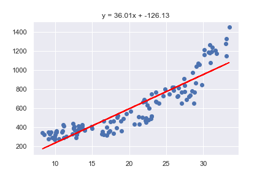
def mean_squared_error(y, pred): # ... # ここに書く # ... # アイスの売り上げは実際100個, 200個, 300個だった y = [100, 200, 300] # 150個, 220個, 300個と予測 pred = [150, 220, 300] print('mse:', mean_squared_error(y, pred))
def loss(a, b): x = [25, 30, 35] y = [80, 90, 100] # ... # ここに書く # ... print('loss:', loss(3, 1))
def mean_squared_error(y, pred): n = len(y) s = 0 for i in range(n): s += (y[i] - pred[i])**2 return s / n y = [100, 200, 300] pred = [150, 220, 300] print('mse:', mean_squared_error(y, pred)) # mse: 966.6666666666666
def loss(a, b): x = [25, 30, 35] y = [80, 90, 100] pred = [] for x_i in x: pred.append(a * x_i + b) return mean_squared_error(y, pred) print('loss:', loss(3, 1)) # loss: 17.666666666666668
# リスト内包表記を使ったバージョン def loss(a, b): x = [25, 30, 35] y = [80, 90, 100] pred = [a * x_i + b for x_i in x] return mean_squared_error(y, pred)
traP アルゴリズム班 Kaggle部 2023/6/21
次の関数f(x)f(x)f(x)の最小値を取るxxxを求めよ。
f(x)=x2+4x+6f(x) = x^2 + 4x + 6 f(x)=x2+4x+6
次の関数 f(x)f(x)f(x)の最小値を取るxxxを求めよ。
f(x)=(x+2)2+2\ \ f(x) = (x + 2)^2 + 2 f(x)=(x+2)2+2 より、 x=−2x = -2x=−2
プログラムに起こすと...
def solve(a, b, c): return -b / (2 * a)
関数を与えられたら、簡単な数学の操作（紙と鉛筆だけ)で解けた！
プログラムのことばで書くと、二次関数の最小値を取るxxxを求める関数は 定数時間で動作するということ。
最小化してください。
f(x)=x2+e−xf(x) = x^2 + e^{-x} f(x)=x2+e−x
解:
f′(x)=2x−e−xf'(x) = 2x - e^{-x} f′(x)=2x−e−x
より最小値を与えるxminx_{\min}xminの必要条件は
2xmin−e−xmin=02x_{\min} - e^{-x_{\min}} = 0 2xmin−e−xmin=0
:thinking_face:
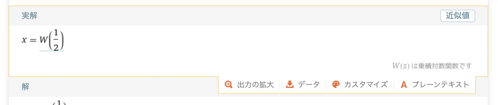
いいたかったこと → このレベルの単純な関数でも、 最小値を与える式を構成するのはむずかしい
損失
を最小化したかった。
数学の答案で最小値 1 になるところを 1.001と答えたら当然
第一回では f(x)=ax+bf(x) = ax + bf(x)=ax+bの形を考えたが...
L(W1,W2,W3,b1,b2,b3)=1n∑ (y−W3σ(W2σ(W1x+b1)+b2)+b3))2L(W_1, W_2, W_3, \bm{b_1}, \bm{b_2}, \bm{b_3}) = \dfrac{1}{n}\sum \ (\bm{y} - W_3\sigma (W_2\sigma (W_1\bm{x} + \bm{b_1}) + \bm{b_2}) + \bm{b_3} ) )^2 L(W1,W2,W3,b1,b2,b3)=n1∑ (y−W3σ(W2σ(W1x+b1)+b2)+b3))2
σ(x)=11+e−x\sigma(x) = \dfrac{1}{1 + e^{-x}} σ(x)=1+e−x1
(というか、普段我々が使っている数学の記号では書けなくなる)
f′(x)=limh→0f(x+h)−f(x)hf'(x) = \lim_{h \to 0} \dfrac{f(x + h) - f(x)}{h} f′(x)=h→0limhf(x+h)−f(x)
微分係数 f′(x)f'(x)f′(x) は、 xxxにおける接線の傾き
−f′(x)-f'(x)−f′(x)方向に関数を少し動かすと、関数の値はすこし小さくなる
例) f(x)=x2f(x) = x^2f(x)=x2
x=3x = 3x=3 で f(3)=9, f′(3)=6f(3) = 9, \ f'(3) = 6f(3)=9, f′(3)=6
∴−f′(x)\therefore -f'(x)∴−f′(x) は負の方向
すこし負の方向にxxxを動かしてみる
f(2.9)=8.41<9f(2.9) = 8.41<9f(2.9)=8.41<9
小さくなった
x=2.9x = 2.9x=2.9 で f(2.9)=8.41, f′(2.9)=5.8f(2.9) = 8.41, \ f'(2.9) = 5.8f(2.9)=8.41, f′(2.9)=5.8
f(2.8)=7.84<8.41f(2.8) = 7.84 <8.41f(2.8)=7.84<8.41
これを繰り返すことで小さい値まで到達できそう！
関数 f(x)f(x)f(x) と、初期値 x0x_0x0 が与えられたとき、 次の式で xxx を更新する
xn+1=xn−ηf′(xn)x_{n+1} = x_n - \eta f'(x_n) xn+1=xn−ηf′(xn)
(η\etaη は学習率と呼ばれる定数)
正確にはこれは最急降下法と呼ばれるアルゴリズムで、「勾配降下法」は勾配を使った最適化手法の総称として用いられることが多いと思います。ですがここでは「勾配降下法」という手法をきっちりと把握して欲しいのであえてこう呼びます。(そこまで目くじらを立てる人はいないと思いますし、勾配降下法あるいは勾配法と言われたらたいていの人がこれを思い浮かべると思います。)
マイナーチェンジが大量にある... (実際に使われるやつは第五回で予定)
さっきの説明の通りです。
微分係数はあくまで「その点の情報」
傾向が成り立つのはその周辺だけ
ちょっとずつ更新していく必要がある
小さな値 学習率 η\etaη をかけることで少しずつ更新する
その式を(解析的に)解いた結果が何であるか知らなくても、 導関数さえ求められれば解を探しにいける！
収束性や局所最適解の話をしたい人がいると思いますが、グッと堪えてしばしお待ちください...
f(x)=x2f(x) = x^2f(x)=x2
初期値として、x0=3x_0 = 3x0=3 学習率として、η=0.1\eta = 0.1η=0.1 を設定。(この二つは自分で決める！)
x1=x0−ηf′(x0)=3−0.1×6=2.4x_1 = x_0 - \eta f'(x_0) = 3 - 0.1 \times 6 = 2.4x1=x0−ηf′(x0)=3−0.1×6=2.4 x2=x1−ηf′(x1)=2.4−0.1×4.8=1.92x_2 = x_1 - \eta f'(x_1) = 2.4 - 0.1 \times 4.8 = 1.92x2=x1−ηf′(x1)=2.4−0.1×4.8=1.92 x3=x2−ηf′(x2)=1.92−0.1×3.84=1.536x_3 = x_2 - \eta f'(x_2) = 1.92 - 0.1 \times 3.84 = 1.536x3=x2−ηf′(x2)=1.92−0.1×3.84=1.536 ⋯\cdots⋯ x100=0.0000000006111107929x_{100} = 0.0000000006111107929x100=0.0000000006111107929
f′(x)=2x−e−xf'(x) = 2x - e^{-x}f′(x)=2x−e−x
初期値として x=3x = 3x=3, 学習率として η=0.0005\eta = 0.0005η=0.0005 を設定。
x1=2.997024893534184x_1 = 2.997024893534184x1=2.997024893534184 ⋯\cdots⋯ x10000=0.3517383210080008x_{10000} = 0.3517383210080008x10000=0.3517383210080008
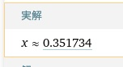
from math import exp x = 3 # （注意: $\eta$は、学習率(learning rate)の略である lr としています。） lr = 0.0005 # 最小化したい関数 def f(x): return x ** 2 + exp(-x) # fのxでの微分係数 def grad(x): return 2 * x - exp(-x)
xn+1=xn−ηf′(xn)x_{n+1} = x_n - \eta f'(x_n)xn+1=xn−ηf′(xn) をコードに起こす
for i in range(10001): # 更新式 x = x - lr * grad(x) if i % 1000 == 0: print('x_', i, '=', x , ', f(x) =', f(x))
x_ 0 = 2.997024893534184 , f(x) = 9.032093623218246 x_ 1000 = 1.1617489280037716 , f(x) = 1.6625989669983947 x_ 2000 = 0.5760466279295902 , f(x) = 0.8939459518186053 x_ 3000 = 0.4109554481889124 , f(x) = 0.8319008499233866 ... x_ 9000 = 0.3517515401706734 , f(x) = 0.8271840265571999 x_ 10000 = 0.3517383210080008 , f(x) = 0.8271840261562484
配布ソースコード: gradient_decent.ipynb
gradient_decent.ipynb
では勾配降下法の様子を可視化できるLoggerというクラスを用意
Logger
最適化の様子をgifで見ることができます(内容は後述)
ここまで紹介した関数は、実はすべて勾配降下法が非常にうまくいく関数 (凸関数と呼ばれる関数)
勾配降下法があまりうまくいかない関数もある
例) f(x)=x210+10sin(x24)f(x) = \dfrac{x^2}{10} + 10 \sin \left(\dfrac{x^2}{4} \right)f(x)=10x2+10sin(4x2)
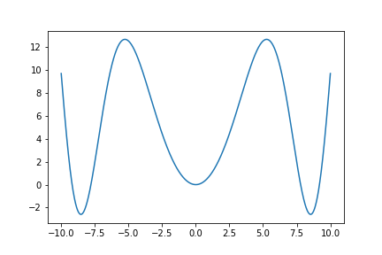
局所最適解 ... 付近では最小値(全体の最小値とは限らない) 大域最適解 ... 全体で最小値
単純な勾配降下法では、局所最適解に陥ってしまう ⇨ なるべく局所最適解にならないよう色々と工夫(詳しくは第5回)
vn+1=αvn−ηf′(xn)v_{n+1} = \alpha v_n - \eta f'(x_n) \\ vn+1=αvn−ηf′(xn)
xn+1=xn+vn+1x_{n+1} = x_n + v_{n+1} xn+1=xn+vn+1
工夫して「陥りにくく」なってるだけで陥りはします。
多変数関数の場合は、微分係数→勾配ベクトル に置き換えればOK
xn+1=xn−η∇f(xn)\bm{x_{n+1}} = \bm{x_n} - \eta \nabla f(\bm{x_n}) xn+1=xn−η∇f(xn)
勾配ベクトルとは、各変数の偏微分係数を並べたものです。 例えば、f(x,y)=x2+y2f(x, y) = x^2 + y^2f(x,y)=x2+y2 の勾配ベクトルは (2x,2y)(2x, 2y)(2x,2y) となります。 これを∇f(x,y)\nabla f(x, y)∇f(x,y) と書きます。 一年生はちょうど微分積分学第一でやるころ？かと思ったので大きくは扱いませんでしたが、 一変数の場合できちんと理解できていれば問題はないはずです。
−log(11+e−x+1)(x2+1)\dfrac{-\log(\dfrac{1}{1 + e^{-x}} + 1)}{(x^2 + 1)} (x2+1)−log(1+e−x1+1)
微分したくなさすぎる
(ここ以降では深層学習の学習の話をします)
さまざまな関数を最小化するアルゴリズムは勾配降下法だけではない (焼きなまし法など)
これらでは学習はうまくいかないのか？
結論: あまりうまくいかない(とされている)
そもそも... 深層学習モデルのような膨大なパラメータを持つモデルの損失関数をうまく小さくすることは、 現代の理論では非常に難しいと思われている
「え、でも世の中いろんなモデルがうまく行ってますよね。。。」
実はなぜうまく行っているのか誰もわかっていない
【基調講演】『深層学習の原理の理解に向けた理論の試み』 今泉 允聡（東大) https://www.slideshare.net/MLSE/ss-237278350
深層学習の原理に迫る https://www.iwanami.co.jp/book/b570597.html
以下(次ページ)のようなデータがあります。
(来店者数) = a×a \timesa× (広告費)
という関係があると仮定したとき、損失(平均二乗誤差)を最小にするaaaを勾配降下法によって求めることで、広告費から来店者数を予測するモデルを学習させてください。
pythonにコピペする用:
x = [10, 2, 5, 10, 10, 5] y = [12, 4, 8, 12, 11, 4]
損失関数をaaaについて微分します。
∂∂a∑i=1n(yi−axi)2=−2∑i=1nxi(yi−axi)\dfrac{\partial}{\partial a} \sum_{i=1}^n (y_i - ax_i)^2 = -2 \sum_{i=1}^n x_i(y_i - ax_i) ∂a∂i=1∑n(yi−axi)2=−2i=1∑nxi(yi−axi)
あとはPythonで実装すればいいです。
# 損失関数 def loss(a): n = len(x) s = 0 for i in range(n): s += (y[i] - a * x[i])**2 return s / n
次のページへ
# 損失関数の勾配 def dloss(a): s = 0 for i in range(n): s += -2 * x[i] * y[i] + 2 * a * x[i]**2 return s / n # 勾配降下法 x = -4 # これは任意(うまくいくものを選ぶ) lr = 0.001 # これも任意(うまくいくものを選ぶ) for i in range(100): x -= lr * g(x) print(x, '|', loss(x))
次へ
ちなみに、配布したソースコードのgradient_decent関数を使うと学習の様子が見れます。
gradient_decent
logger = gradient_decent(loss, dloss, 50, -4, lr=0.001, x_range=np.linspace(-10, 10, 100)) logger.gif("linreg.gif", fps=10) preview("linreg.gif")
traP アルゴリズム班 Kaggle部 2023/xx/xx
人間が微分を行うのは限界がある ⇨ コンピュータにやらせよう！
正確には「自動微分」は、コンピュータに自動で微分を行わせる手法のうち、関数を単純な関数の合成と見て、特に連鎖律を利用して、陽に導関数を求めることなく微分を行う手法を指します(より狭義に、back propagationを用いるもののみを指すこともあるようです)。 詳しくは、資料末の発展事項を参照してください。
結論: PyTorchを使うと微分ができる.
>>> x = torch.tensor(2.0, requires_grad=True) >>> def f(x): ... return x ** 2 + 4 * x + 3 ... >>> y = f(x) >>> y.backward() >>> x.grad tensor(8.)
(f(x)=x2+4x+3f(x) = x^2 + 4x + 3f(x)=x2+4x+3のx=2x = 2x=2における微分係数888)
ニューラルネットワーク・ディープラーニングのさまざまな派生系の
は大体同じ！
例) 新しい車を開発するときも、部品(ネジ、タイヤ、エンジンの部品...)は大体同じ、組み立ても大体同じ
⇨ 毎回同じことをみんながそれぞれやるのは面倒 ⇨ 共通の「基盤」を提供するソフトウェアの需要がある
個人的には、最近Googleが力を入れているjax/flaxに注目しています。関数型プログラミングの考え方を取り入れていて、最近人気が出始めています。
どれがいいの？ ⇨ PyTorchを使っておけば間違いない(と、思います)
(赤: PyTorch, 青: TensorFlow)
今回はPyTorchを使います！
大体の有名フレームワークにそこまで致命的な速度差はなく、記述に関しては好みによるところも多いです。PyTorchの差別化ポイントは、有名モデルの実装サンプルが大体存在するという点です。 実際に論文を読んで実装するのは骨の折れる作業なので、サンプルが充実していのはとても大きな利点です。
数学の「数」に対応するオブジェクトとして、 PyTorchでは
を使う
⬇︎ 多次元配列とは？
スカラ・ベクトル(配列)・行列 ... の一般化
v = [1, 2, 3] A = [[1, 2, 3], [4, 5, 6], [7, 8, 9]] T = [[[1, 2, 3], [4, 5, 6]], [[7, 8, 9], [10, 11, 12]]]
>>> x = torch.tensor(2.0, requires_grad=True)
2.0というスカラを保持するTensor型のオブジェクトを作成 (数 x=2.0x = 2.0x=2.0を定義)
>>> x = torch.tensor([1.0, 2.0, 3.0], requires_grad=True)
[1.0, 2.0, 3.0]というベクトルを保持するTensor型のオブジェクトを作成 (数 x⃗=(1.0,2.0,3.0)\vec{x} = (1.0, 2.0, 3.0)x=(1.0,2.0,3.0)を定義)
かつては自動微分にはVariableという名前の型が使われていて、(現在はTensor型に統合された) Tensorと数学の変数の概念にある程度の対応があることがわかります。
Variable
torch.tensor(data, requires_grad=False)
data
requires_grad
>>> x = torch.tensor([[1.0, 2.0, 3.0], [4.0, 5.0, 6.0]], requires_grad=True)
[[1.0, 2.0, 3.0], [4.0, 5.0, 6.0]]という行列を保持するTensor型のオブジェクトを作成 (数 X=(1.02.03.04.05.06.0)X = \begin{pmatrix} 1.0 & 2.0 & 3.0 \\ 4.0 & 5.0 & 6.0 \end{pmatrix}X=(1.04.02.05.03.06.0)を定義)
(requires_grad=Trueとすれば、勾配計算が可能なTensor型を作成できる)
requires_grad=True
これらを勾配計算が可能なTensor型として表現してください。
(このページの内容は、実際にやらなくてもやり方がわかればOKです)
↓ 問題の続き次のページへ
(実際にやってください)
X=(12⋯101112⋯20⋮⋮⋱⋮9192⋯100)X = \begin{pmatrix} 1 & 2 & \cdots & 10 \\ 11 & 12 & \cdots & 20 \\ \vdots & \vdots & \ddots & \vdots \\ 91 & 92 & \cdots & 100 \end{pmatrix} X=111⋮91212⋮92⋯⋯⋱⋯1020⋮100
を勾配計算が可能なTensor型として表現してください。(次ページヒント)
1, 2, 3: 講義資料を遡って、torch.tensorの第一引数と作成されるTensor型の対応を見比べてみましょう。
torch.tensor
4: Pythonのエラーは、
~~たくさん書いてある~ ~~Error: {ここにエラーの概要}
という形式です。"~~Error"というところのすぐ後に書いてある概要を確認してみましょう。
5: 3が解けたのであれば、torch.tensorの第一引数にどのようなオブジェクトをが来るべきかはわかるはずです。あとはそのリストの構築方法を考えましょう。
1~3.
# 1 x = torch.tensor(3.0, requires_grad=True) # 2 x = torch.tensor([3.0, 4.0, 5.0], requires_grad=True) # 3 x = torch.tensor([[3.0, 4.0, 5.0], [6.0, 7.0, 8.0]], requires_grad=True)
x = torch.tensor(3, requires_grad=True)
と入力してみると、
"RuntimeError: Only Tensors of floating point and complex dtype can require gradients"となります。これは、勾配が計算可能なのは浮動小数点数と複素数のみであるということを意味しています。
>>> matrix = [] >>> for i in range(10): ... row = [] ... for j in range(10 * i + 1, 10 * i + 11): ... row.append(float(j)) ... matrix.append(row) ... >>> torch.tensor(matrix, requires_grad=True)
>>> x = torch.tensor([[float(i) for i in range(10 * j + 1, 10 * j + 11)] for j in range(10)]
他にも別解はたくさんありますが、書き方に関わらず作れればここまでの内容は理解できているので)
Tensor型は、「数」なので当然各種演算が可能
x = torch.tensor(2.0, requires_grad=True)
x + 2 # -> tensor(4., grad_fn=<AddBackward0>)
x * 2 # -> tensor(4., grad_fn=<MulBackward0>)
各種 数学的な(?) 関数も利用可能
torch.sqrt(x) # -> tensor(1.4142, grad_fn=<SqrtBackward0>)
torch.sin(x) # -> tensor(0.9093, grad_fn=<SinBackward0>)
torch.exp(x) # -> tensor(7.3891, grad_fn=<ExpBackward0>)
ここまでの内容は別にPyTorchを使わなくてもできること PyTorchは、計算と共に勾配の計算ができる！
足し算をする。
y = x + 2
print(y)
これの出力は、 tensor(4., grad_fn=<AddBackward0>) ⇨ Addという演算がyに記録されている！
y
普通のPythonの数値では、
x = 2 y = x + 2 print(y) # -> 4.0
yがどこから来たのかはわからない(値として4.04.04.0を持っているだけ)
backward
x = torch.tensor(2.0, requires_grad=True) y = x + 2
y.backward()
print(x.grad) # -> tensor(1.)
# 1. 変数(Tensor型)の定義 x = torch.tensor(2.0, requires_grad=True) # 2. 計算 y = x + 2 # 3. backward() y.backward()
すると、x.gradに計算された勾配が格納される。
x.grad
なぜこんな設計なのか気になった人は、講義が終わったら資料末の「発展的話題: 自動微分のアルゴリズム」を読んでみてください。現段階では、今回はこのセットで計算できる！ということを覚えてもらえればokです。
定義→計算→backward(), 定義→計算→backward(), 定義→計算→backw 定義→計算→backward(), 定義→計算→backward(), 定義→計算→backw 定義→計算→backward(), 定義→計算→backward(), 定義→計算→backw 定義→計算→backward(), 定義→計算→backward(), 定義→計算→backw 定義→計算→backward(), 定義→計算→backward(), 定義→計算→backw 定義→計算→backward(), 定義→計算→backward(), 定義→計算→backw 定義→計算→backward(), 定義→計算→backward(), 定義→計算→backw 定義→計算→backward(), 定義→計算→backward(), 定義→計算→backw 定義→計算→backward(), 定義→計算→backward(), 定義→計算→backw 定義→計算→backward(), 定義→計算→backward(), 定義→計算→backw 定義→計算→backward(), 定義→計算→backward(), 定義→計算→backw 定義→計算→backward(), 定義→計算→backward(), 定義→計算→backw 定義→計算→backward(), 定義→計算→backward(), 定義→計算→backw 定義→計算→backward(), 定義→計算→backward(), 定義→計算→backw 定義→計算→backward(), 定義→計算→backward(), 定義→計算→backw 定義→計算→backward(), 定義→計算→backward(), 定義→計算→backw 定義→計算→backward(), 定義→計算→backward() 定義→計算→backw
例1) f(x)=sin((x+2)+(1+ex2))f(x) = sin((x + 2) + (1 + e^{x^2}))f(x)=sin((x+2)+(1+ex2)) の微分
x = torch.tensor(2.0, requires_grad=True) y = y = torch.sin((x + 2) + (1 + torch.exp(x ** 2))) y.backward() print(x.grad()) # -> tensor(-218.4625)
例2) y=x2,z=2y+3y = x^2, z = 2y + 3y=x2,z=2y+3 の微分(dzdx\frac{dz}{dx}dxdz)
x = torch.tensor(2.0, requires_grad=True) y = x ** 2 z = 2 * y + 3 z.backward() print(x.grad) # -> tensor(8.) ... backward()した変数に対する勾配！(この場合はz)
x = torch.tensor([1.0, 2.0, 3.0], requires_grad=True) y = 2 * x[0] + 3 * x[1] + 4 * x[2] y.backward() print(x.grad) # -> tensor([2., 3., 4.])
x⃗=(x1,x2,x3)T\vec{x} = (x_1, x_2, x_3)^\mathsf{T} \\ x=(x1,x2,x3)T
y=2x1+3x2+4x3y = 2x_1 + 3x_2 + 4x_3 y=2x1+3x2+4x3
dydx⃗=(dydx1,dydx2,dydx3)T=(2,3,4)T\frac{dy}{d\vec{x}} = \left(\frac{dy}{dx_1}, \frac{dy}{dx_2}, \frac{dy}{dx_3}\right)^\mathsf{T} = (2, 3, 4)^\mathsf{T} dxdy=(dx1dy,dx2dy,dx3dy)T=(2,3,4)T
と対応
A = torch.tensor([[1.0, 2.0, 3.0], [4.0, 5.0, 6.0]], requires_grad=True) y = torch.sum(A) y.backward() print(A.grad) # -> tensor([[1., 1., 1.], # [1., 1., 1.]])
A=(123456), y=∑i=12∑j=13aij=21A = \begin{pmatrix} 1 & 2 & 3 \\ 4 & 5 & 6 \end{pmatrix}, \ y = \sum_{i=1}^2 \sum_{j=1}^3 a_{ij} = 21 A=(142536), y=i=1∑2j=1∑3aij=21
dydA=(dyda11dyda12dyda13dyda21dyda22dyda23)=(111111)\frac{dy}{dA} = \begin{pmatrix} \frac{dy}{da_{11}} & \frac{dy}{da_{12}} & \frac{dy}{da_{13}} \\ \frac{dy}{da_{21}} & \frac{dy}{da_{22}} & \frac{dy}{da_{23}} \end{pmatrix} = \begin{pmatrix} 1 & 1 & 1 \\ 1 & 1 & 1 \end{pmatrix} dAdy=(da11dyda21dyda12dyda22dyda13dyda23dy)=(111111)
x = torch.tensor(2.0, requires_grad=True) y = torch.tensor(3.0, requires_grad=True) z = 2 * x + 4 * y z.backward() print(x.grad) # -> tensor(2.) print(y.grad) # -> tensor(4.)
z=2x+4yz = 2x + 4y \\ z=2x+4y
∂z∂x=2, ∂z∂y=4\dfrac{\partial z}{\partial x} = 2, \ \dfrac{\partial z}{\partial y} = 4 ∂x∂z=2, ∂y∂z=4
に対応
x = torch.tensor(2.0, requires_grad=True) def f(x): return x + 3 def g(x): return torch.sin(x) + torch.cos(x ** 2) if rand() < 0.5: y = f(x) else: y = g(x)
ポイント: 実際に適用される演算は、実行してみないとわからないが、適用される演算はどう転んでも微分可能な演算なのでOK. (if文があるから, for文があるから, 自分が定義した関数に渡したから...ということは関係なく、実際に適用される演算のみが問題になる)
y=x2+2x+1y = x^2 + 2x + 1y=x2+2x+1 のx=3.0x = 3.0x=3.0における微分係数をPyTorchを使って求めよ。
y=f(x⃗)=x12+x22+x32y = f(\vec{x}) = {x_1}^2 + {x_2}^2 + {x_3}^2y=f(x)=x12+x22+x32の x⃗=(1.0,2.0,3.0)T\vec{x} = (1.0, 2.0, 3.0)^\mathsf{T}x=(1.0,2.0,3.0)Tにおける勾配をPyTorchを使って求めよ。
W=(1.02.03.04.05.06.0)W = \begin{pmatrix} 1.0 & 2.0 & 3.0 \\ 4.0 & 5.0 & 6.0 \end{pmatrix}W=(1.04.02.05.03.06.0), x1⃗=(1.0,2.0)\vec{x_1} = (1.0, 2.0)x1=(1.0,2.0), x2⃗=(1.0,2.0,3.0)T\vec{x_2} = (1.0, 2.0, 3.0)^\mathsf{T}x2=(1.0,2.0,3.0)Tに対して、y=f(W,x1⃗,x2⃗)=x1⃗Wx2⃗y = f(W, \vec{x_1}, \vec{x_2}) = \vec{x_1}W\vec{x_2}y=f(W,x1,x2)=x1Wx2の勾配をPyTorchを使って求めよ。なお、行列積はtorch.matmul関数で利用できる。
torch.matmul
(次ページヒント)
x = torch.tensor(3.0, requires_grad=True) y = x ** 2 + 2 * x + 1 y.backward() print(x.grad) # -> tensor(8.)
x = torch.tensor([1.0, 2.0, 3.0], requires_grad=True) y = x[0] ** 2 + x[1] ** 2 + x[2] ** 2 y.backward() print(x.grad) # -> tensor([2., 4., 6.])
W = torch.tensor([[1.0, 2.0, 3.0], [4.0, 5.0, 6.0]], requires_grad=True) x1 = torch.tensor([[1.0, 2.0]], requires_grad=True) x2 = torch.tensor([1.0, 2.0, 3.0], requires_grad=True) y = torch.matmul(torch.matmul(x1, W), x2) y.backward() print(W.grad) print(x1.grad) print(x2.grad)
f(x)=x2+e−xf(x) = x^2 + e^{-x}f(x)=x2+e−xの勾配降下法による最小値の探索
from math import exp x = 3 lr = 0.0005 # xでの微分係数 def grad(x): return 2 * x - exp(-x) for i in range(10001): # 更新式 x = x - lr * grad(x) if i % 1000 == 0: print('x_', i, '=', x)
これまでは、導関数gradを我々が計算しなければいけなかった ⇨自動微分で置き換えられる！
grad
import torch x = torch.tensor(3.0, requires_grad=True) def f(x): return x ** 2 + torch.exp(-x) for i in range(10001): y = f(x) y.backward() x = x - lr * x.grad
実際に動かすにあたっては軽微な修正が必要ですが、スペースが足りないのでここには載せていません。 詳しくは配布のソースコードを参照してください。
f(x)=−log(11+e−x+1)(x2+1)f(x) = \dfrac{-\log(\dfrac{1}{1 + e^{-x}} + 1)}{(x^2 + 1)} f(x)=(x2+1)−log(1+e−x1+1)
の最小値を、PyTorchを用いて勾配降下法を実装することで求めてください。
実装にあたっては、配布ソースコードのPyTorchによる勾配降下法」の項を参照してください。
(次ページ次の問題)
f(x;a,b)=ax+bf(x; a, b) = ax + b f(x;a,b)=ax+b
とします。アイスの売り上げと気温の関係は、リンク先からコピーできます。それぞれのデータが(xi,yi)(x_i, y_i)(xi,yi)として与えられているとき、
L(a,b)=∑i=1n(yi−f(xi;a,b))2L(a, b) = \sum_{i=1}^{n} (y_i - f(x_i; a, b))^2 L(a,b)=i=1∑n(yi−f(xi;a,b))2
を最小にするa,ba, ba,bをPyTorchを用いて勾配降下法を実装することで求めてください。(次ページ次の問題)
第一回の講義資料では次のような文章がありました。
「「悪さ」を最小化するのではなく「良さ」を最大化すれば良くない？と思った人もいるかもしれないですね。 実はそれはものすごくいい疑問で、次回以降で明らかになっていきます。 ひとまずは一旦疑問として抱えておいてください。」
これに対する答えを考えてみてください。 より具体的に、たとえば「明日は晴れかどうか予測する」、という問題に対して例えば「正解率」を最大化することを考えた場合、どのような点で困るか考えてください。
1, 2.配布ソースコードの該当箇所を確認してよく見比べてください。
出力は最終的に「晴れ」or「晴れじゃない」のいずれかに割り振られる。したがって、パラメータが微小に変化したとしても、出力は変化しない。つまり、ほとんどの場合で微分係数が0になってしまう。これでは勾配降下法の枠組みで学習を進めることができない。
これらが気になる人向け
backward()
めちゃx2余談です
ポイント: 最適化の文脈では、基本的にほしいものは「微分係数」であって 「導関数」である必要はない
人間が微分をする場合...
例) f(x)=x2+2x+1f(x) = x^2 + 2x + 1f(x)=x2+2x+1のx=3.0x = 3.0x=3.0における微分係数を求めろ
f′(x)=2x+2‾\underline{f'(x) = 2x + 2}f′(x)=2x+2だから、f′(3.0)=8.0f'(3.0) = 8.0f′(3.0)=8.0
PyTorchでは...
x = torch.tensor(3.0, requires_grad=True) y = x ** 2 + 2 * x + 1 y.backward() x.grad # -> tensor(8.)
どうやって？
微分の定義式から直接近似する。
⬇︎ そのままPythonに
def diff(f, x, h=1e-4): return (f(x + h) - f(x)) / h
コンピュータ上で直接極限の計算をするのは大変なので、 代わりに小さい値hhh(上では0.0010.0010.001)を使って近似する。
演算は、計算グラフと呼ばれる有向非巡回グラフで表せる。
y=3x+4y = 3x + 4y=3x+4 →
goldstain(x,y)=(1+(x+y+1)2(19−14x+3x2−14y+6xy+3y2))(30+(2x−3y)2(18−32x+12x2+48y−36xy+27y2))goldstain(x, y) = (1 + (x + y + 1)^2 (19 - 14x + 3x^2 - 14y + 6xy + 3y^2)) (30 + (2x - 3y)^2 (18 - 32x + 12x^2 + 48y - 36xy + 27y^2))goldstain(x,y)=(1+(x+y+1)2(19−14x+3x2−14y+6xy+3y2))(30+(2x−3y)2(18−32x+12x2+48y−36xy+27y2))
→
計算グラフに直せば、
式の操作 ↔\leftrightarrow↔ 計算グラフの操作
計算グラフなど式を適切に表したデータ構造から 直接導関数を求める手法を数式微分や記号微分と呼ぶ。
(講義資料にもあるように、自動で微分を求めるアルゴリズムの一種が「自動微分」)
dzdx=dzdydydx\frac{dz}{dx} = \frac{dz}{dy} \frac{dy}{dx} dxdz=dydzdxdy
のこと
例) z=(x+y)2z = (x + y)^2z=(x+y)2のx=3,y=2x = 3, y = 2x=3,y=2における勾配
a=add(x,y),z=square(a)a = add(x, y), z = square(a)a=add(x,y),z=square(a)である。 (つまり、基本的な関数addaddaddとsquaresquaresquareの合成である)
∂z∂x=∂z∂z∂z∂a∂a∂x=1×2a×1=10\frac{\partial z}{\partial x} = \frac{\partial z}{\partial z} \frac{\partial z}{\partial a}\frac{\partial a}{\partial x} = 1 \times 2a \times 1 = 10 ∂x∂z=∂z∂z∂a∂z∂x∂a=1×2a×1=10
∂z∂y=∂z∂z∂z∂a∂a∂y=1×2a×1=10\frac{\partial z}{\partial y} = \frac{\partial z}{\partial z} \frac{\partial z}{\partial a}\frac{\partial a}{\partial y} = 1 \times 2a \times 1 = 10 ∂y∂z=∂z∂z∂a∂z∂y∂a=1×2a×1=10
とすれば計算できる。
ここで使ったのは...
∂z∂a=2a,∂a∂y=1\frac{\partial z}{\partial a} = 2a, \frac{\partial a}{\partial y} = 1∂a∂z=2a,∂y∂a=1という知識
これらは、基本的な関数の微分 ⇨ 基本的な関数の導関数さえ定義しておけばこれらの関数の組み合わせのどんな複雑な関数でも微分できる。
∂z∂x=∂z∂z∂z∂a‾∂a∂x=1×2a×1=10\frac{\partial z}{\partial x} = \underline{\frac{\partial z}{\partial z} \frac{\partial z}{\partial a}}\frac{\partial a}{\partial x} = 1 \times 2a \times 1 = 10 ∂x∂z=∂z∂z∂a∂z∂x∂a=1×2a×1=10
∂z∂y=∂z∂z∂z∂a‾∂a∂y=1×2a×1=10\frac{\partial z}{\partial y} = \underline{\frac{\partial z}{\partial z} \frac{\partial z}{\partial a}}\frac{\partial a}{\partial y} = 1 \times 2a \times 1 = 10 ∂y∂z=∂z∂z∂a∂z∂y∂a=1×2a×1=10
共通部の計算は共通化できていた。(初期化部分とSquareの微分に対応)
そして、計算は通常の計算とグラフを逆に辿る(逆伝播(back propagation))の二回で済んだ！
y.backward
PyTorch上の計算グラフは、torchvizというライブラリを使うと可視化できる。
x = torch.tensor([1., 2., 3.], requires_grad=True) y = torch.sin(torch.sum(x) + 2) make_dot(y)
このように演算と同時に計算グラフを構築するスタイルをdefine-by-runと呼び、これに対して 計算グラフを先に構築してから演算を行うスタイルをdefine-and-runと呼びます。 かつては共存していましたが、今では多くのフレームワークがdefine-by-runを主要なスタイルとして採用しています。実行時に計算グラフを構築する方が圧倒的に柔軟性があるからです。
ここまでで説明したのは、グラフを出力から「逆にたどる」自動微分 ⇨ 特にreverseモードの自動微分などと呼ばれる
逆に、forwardモードの自動微分と呼ばれる手法もある
二重数と呼ばれる数を使った実装が有名
実数の範囲内では、
x2=0⇔x=0x^2 = 0 \Leftrightarrow x = 0 x2=0⇔x=0
ここで、新しく
ε2=0\varepsilon^2 = 0 ε2=0
なる数 ε≠0\varepsilon \neq 0ε=0を考えて、実数にこれを加えた集合の演算を考える (虚数を考えたときと同じ展開)
そこで複素数を考えたときと全く同様に、 z=a+bεz = a + b\varepsilonz=a+bεという形の数を考える(a,b∈Ra, b \in \mathbb{R}a,b∈R)
このような形で表される数を二重数と呼ぶことにする
ε2=0\varepsilon^2 = 0ε2=0に注意すれば、
(a+bε)+(c+dε)=(a+c)+(b+d)ε(a+bε)×(c+dε)=(ac)+(ad+bc)ε\begin{align*} (a + b\varepsilon) + (c + d\varepsilon) &= (a + c) + (b + d)\varepsilon \\ (a + b\varepsilon) \times (c + d\varepsilon) &= (ac) + (ad + bc)\varepsilon \\ \end{align*} (a+bε)+(c+dε)(a+bε)×(c+dε)=(a+c)+(b+d)ε=(ac)+(ad+bc)ε
とするのが良さそう
すると、実係数多項式
f(x)=anxn+an−1xn−1+⋯+a1x+a0f(x) = a_nx^n + a_{n-1}x^{n-1} + \cdots + a_1x + a_0 f(x)=anxn+an−1xn−1+⋯+a1x+a0
に対して、
f(x+bε)=f(x)+bf′(x)εf(x + b\varepsilon) = f(x) + bf'(x)\varepsilon f(x+bε)=f(x)+bf′(x)ε
となることがわかる やや雑ですが、微分可能ならテイラー展開することで結局実係数多項式にできるので実係数多項式の微分が正しく計算できるのであれば、微分可能な関数全てに対してうまくいきそう
https://en.wikipedia.org/wiki/Automatic_differentiation#Two_types_of_automatic_differentiationから
reverseモード同様、基本的な関数に対して二重数の演算を定義しておき、その合成として計算。
をもう一度見れば、f(x+bε)f(x + b\varepsilon)f(x+bε)の計算それ自体がfffのxxxにおける微分係数を求める演算と対応している！
普通の関数の計算は計算グラフを入力から「順」に辿っていく (順伝播, forward propagation) ことに他ならない
もっと興味がある人は
ゼロから作るDeep Learning ❸: https://www.oreilly.co.jp/books/9784873119069/ や、 https://arxiv.org/abs/1502.05767 (自動微分全般の話) https://arxiv.org/abs/1810.07951 (「ソースコードから微分する」話) などを読んでみてください。
第一回 「学習」 第二回 「勾配降下法」 第三回 「自動微分」
データさえあれば...誤差を小さくするパラメータを
求められるようになった！ (== 学習ができるようになった！)
ここまではf(x)=ax+bf(x) = ax + bf(x)=ax+b のかたちを仮定してきた
⇨ われわれの学習手法はこの仮定に依存しているか？
我々の手法(自動微分と勾配降下法による学習)で満たすべき条件は、
ことのみ！
⇨ この条件を満たす関数なら文字通りどんなものでも学習できる！
今日のおはなし
損失関数
L(a,b)=∑i=0n−1(yi−f(xi)‾)2L(a, b) = \sum_{i=0}^{n-1} (y_i - \underline{f(x_i)})^2 L(a,b)=i=0∑n−1(yi−f(xi))2
のfffを変えよう
f(x)=ax+bf(x) = ax + bf(x)=ax+b は、a,ba, ba,bをどんなに変えても常に直線 ⇨ 直線以外の関係を表現できない
f(x)=ax2+bx+cf(x) = ax^2 + bx + cf(x)=ax2+bx+c でも動く
f(x)=sin(ax+b)f(x) = \sin(ax + b)f(x)=sin(ax+b) でも動く
f(x)=eax+bf(x) = e^{ax + b}f(x)=eax+b でも動く
⇨ 直線以外を表現することはできるが
しか表現できない...
⇨ これらのパラメータどんなにいじっても
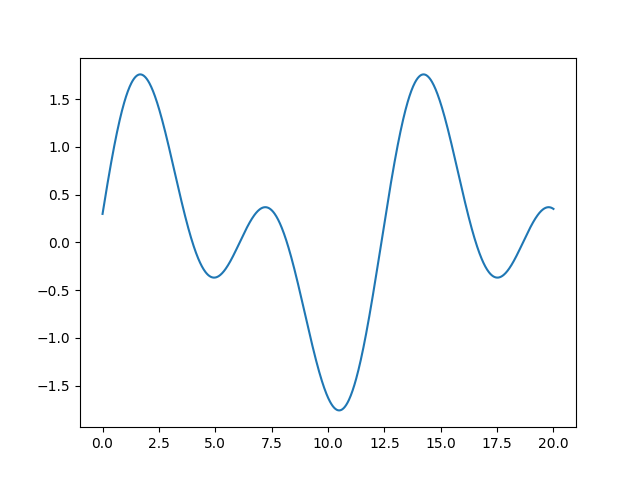
みたいなのは表現できない
sin(x),cos(x),x2+x,ex⋯\sin(x), \cos(x), x^2 + x, e^x \cdotssin(x),cos(x),x2+x,ex⋯ はそれぞれ単体だと単純な関数だが、 合成してみると....？ 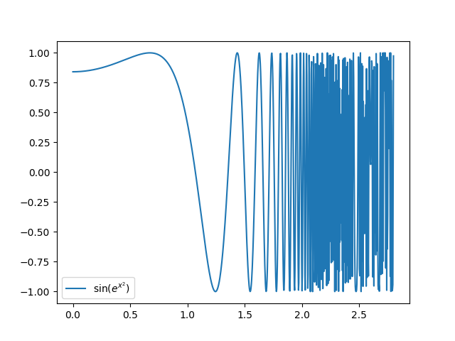
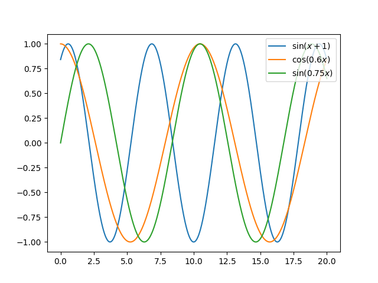
⇨ ベースにした三角関数の和をとると...
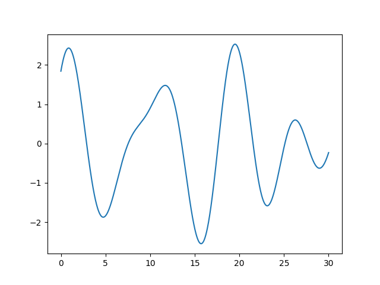 < 実質ASMR
パラメータとして a=(a1,a2,a3,a4,a5)\bm{a} = (a_1, a_2, a_3, a_4, a_5)a=(a1,a2,a3,a4,a5), b=(b1,b2,b3,b4,b5)\bm{b} = (b_1, b_2, b_3, b_4, b_5)b=(b1,b2,b3,b4,b5), c=(c1,c2,c3,c4,c5)\bm{c} = (c_1, c_2, c_3, c_4, c_5)c=(c1,c2,c3,c4,c5) をもつ
f(x)=∑i=15aisin(bix+ci)f(x) = \sum_{i=1}^5 a_i \sin(b_i x + c_i) f(x)=i=1∑5aisin(bix+ci)
⇩
a=(0.04,0.78,0.09,0.63,0.01),b=(0.94,0.43,0.25,0.19,0.41),c=(0.01,0.65,0.87,0.61,0.81)a = (0.04, 0.78, 0.09, 0.63, 0.01), \\ b = (0.94, 0.43, 0.25, 0.19, 0.41), \\ c = (0.01, 0.65, 0.87, 0.61, 0.81)a=(0.04,0.78,0.09,0.63,0.01),b=(0.94,0.43,0.25,0.19,0.41),c=(0.01,0.65,0.87,0.61,0.81) のとき
a=(0.83,0.27,0.84,0.28,0.14),b=(0.71,0.47,0.56,0.39,0.94),c=(0.08,0.92,0.16,0.44,0.21)a = (0.83, 0.27, 0.84, 0.28, 0.14), \\ b = (0.71, 0.47, 0.56, 0.39, 0.94), \\ c = (0.08, 0.92, 0.16, 0.44, 0.21)a=(0.83,0.27,0.84,0.28,0.14),b=(0.71,0.47,0.56,0.39,0.94),c=(0.08,0.92,0.16,0.44,0.21) のとき 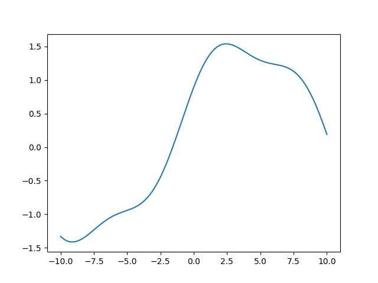
「基になる関数」にどのような関数を選ぶべきか？
これまでの我々のアプローチを思い出すと、 「変化させるのが可能なところはパラメータにして、学習で求める」
最近流行りの機械学習モデルは基本的にニューラルネットワークをつかっている
ある程度以上複雑な問題では、たいていの場合ニューラルネットワークが最も精度が出やすい
例) 画像分類, 音声分類, 画像生成, 対話 ...
基本単位: レイヤー
ニューラルネットワークは、「レイヤー(層)」と呼ばれる関数の合成によって構成されるモデル
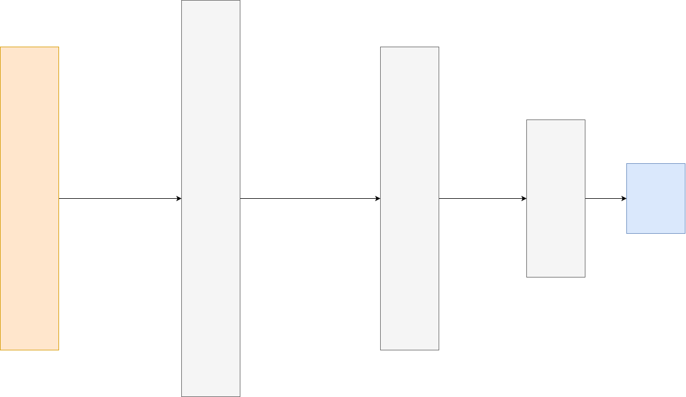
入力層 入力を受け取るレイヤー
出力層 出力を出力するレイヤー
中間層(隠れ層, hidden layer) それ以外のレイヤー
データの流れは、 入力層 → 中間層 → 中間層 → ... → 出力層
W∈Rm×n, b∈RmW \in \mathbb{R}^{m \times n}, \ b \in \mathbb{R}^mW∈Rm×n, b∈Rm と (m,nm, nm,nは適当に定めた自然数) 全結合層が固有にもつ「活性化関数」を用いて
入力としてx∈Rn\bm{x} \in \mathbb{R}^nx∈Rnを受け取り、
σ(Wx+b)\sigma \left(W \bm{x} + \bm{b} \right)σ(Wx+b) を出力する。
nnn個の入力を受け取り、mmm個出力する
複雑な関数を表現するアイデア...
をする
「W∈Rm×n, b∈RmW \in \mathbb{R}^{m \times n}, \ b \in \mathbb{R}^mW∈Rm×n, b∈Rm と (m,nm, nm,nは適当に定めた自然数) 全結合層が固有にもつ「活性化関数」を用いて
入力としてx∈Rn\bm{x} \in \mathbb{R}^nx∈Rnを受け取り、 σ(Wx+b)\sigma \left(W \bm{x} + \bm{b} \right)σ(Wx+b) を出力する」
非線形関数
シグモイド関数 σ(x)=11+exp(−x)\sigma(x) = \dfrac{1}{1 + \exp(-x)}σ(x)=1+exp(−x)1
ReLU関数 relu(x)=max(0,x)\mathrm{relu}(x) = \max(0, x)relu(x)=max(0,x)
tanh関数 tanh(x)=exp(x)−exp(−x)exp(x)+exp(−x)\tanh(x) = \dfrac{\exp(x) - \exp(-x)}{\exp(x) + \exp(-x)}tanh(x)=exp(x)+exp(−x)exp(x)−exp(−x)
合成を繰り返す ⇨ 複雑な関数を表現
mmm個の出力のひとつに注目してみる
y=σ(Wx+b)\bm{y} = \sigma \left(W \bm{x} + \bm{b} \right)y=σ(Wx+b) ⇨ yi=σ(∑jWijxj+bi)y_i = \sigma \left( \displaystyle{\sum_{j} W_{ij} x_j + b_i} \right)yi=σ(j∑Wijxj+bi)
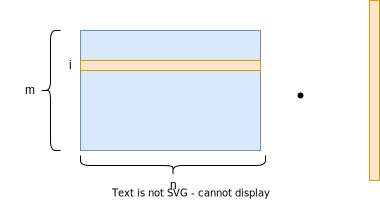
yi=σ(∑jWijxj+bi)y_i = \sigma \left( \displaystyle{\sum_{j} W_{ij} x_j + b_i} \right)yi=σ(j∑Wijxj+bi)
は、
とおなじことをしている
xjx_jxjはそれまでの層でσ\sigmaσを通した、非線形な関数
σ(∑jWijxj+bi)\sigma \left( \displaystyle{\sum_{j} W_{ij} x_j + b_i} \right)σ(j∑Wijxj+bi)
➡︎ 非線形関数の重みつき和 ➡︎ 複雑な非線形関数を表現できる！ + さらにそれを非線形関数に通す
演算をddd 回繰り返す (nnn 次元ベクトル → m1m_1m1, → m2m_2m2, → ⋯\cdots⋯, → mdm_dmd 次元ベクトルへと 変換されながら計算が進んでいく)
y(1)=σ(W(1)x+b(1))\bm{y}^{(1)} = \sigma \left(W^{(1)} \bm{x} + \bm{b}^{(1)} \right) y(1)=σ(W(1)x+b(1))
y(2)=σ(W(2)y(1)+b(2))\bm{y}^{(2)} = \sigma \left(W^{(2)} \bm{y}^{(1)} + \bm{b}^{(2)} \right) y(2)=σ(W(2)y(1)+b(2))
⋯\cdots ⋯
y(d)=σ(W(d)y(d−1)+b(n))\bm{y}^{(d)} = \sigma \left(W^{(d)} \bm{y}^{(d-1)} + \bm{b}^{(n)} \right) y(d)=σ(W(d)y(d−1)+b(n))
y=id(W(o)y(d)+b(o))\bm{y} = \mathrm{id} \left(W^{(o)} \bm{y}^{(d)} + \bm{b}^{(o)} \right) y=id(W(o)y(d)+b(o))
y=∑jwj(o)yj(d)+b(d)y = \displaystyle{\sum_{j} w^{(o)}_{j} y^{(d)}_j + b^{(d)}} y=j∑wj(o)yj(d)+b(d)
ここで、
とくに、全結合層のみからなるニューラルネットワークを 多層パーセプトロン (Multi Layer Perceptron, MLP) という
f(x)=ax+bf(x) = ax + bf(x)=ax+b ⇨ ニューラルネットへ
< どれくらい表現能力が変わったのか？
(注) 正確な表現ではありません！！！！！！！！！！！！！！！！！！！！！！！！！！！！！！！！！！！！！
隠れ層を一つ持つニューラルネットワークは、 任意の連続関数を表現できる
今回の講習会できちんとこの辺を論じると第300回までいくこと間違いなしなのでかなりアバウトな話になっていますので、きちんと議論がしたくて興味がある人は (https://qiita.com/mochimochidog/items/ca04bf3df7071041561a) などに詳しくまとまっているので、読んでみてください。
我々の学習手法は、f(x)=ax+bf(x) = ax + bf(x)=ax+bというモデルの構造自体に直接依存しているわけではなかった
そして、f(x)=ax+bf(x) = ax + bf(x)=ax+bというモデルの構造では直線しか表現することができないので、違う形を考えることにした
「基になる」簡単な関数の、合成と和を考えることでかなり複雑な関数も表現できることがわかった
「基になる」関数の選び方を考える上で、この関数自体もパラメータによって変化させるモデルとして、ニューラルネットワークを導入した
ニューラルネットワークは任意の関数を表現できることがわかった
[1]https://citeseerx.ist.psu.edu/viewdoc/download?doi=10.1.1.441.7873&rep=rep1&type=pdf
σ(x)→{0(x→−∞)1(x→∞)\sigma(x) \to \left\{ \begin{array}{ll} 0 & (x \to -\infty) \\ 1 & (x \to \infty) \end{array} \right. σ(x)→{01(x→−∞)(x→∞)
を満たす関数を「シグモイド型関数」と呼ぶことにし、 Ω=[0,1]d\Omega = [0, 1]^dΩ=[0,1]dとして、CCC を Ω\OmegaΩ 上の連続関数の集合とする。
「任意の f∈C,ε>0f \in C, \varepsilon > 0f∈C,ε>0 に対して、ある N∈NN \in \mathbb{N}N∈N と ai,bi∈Rd,ci∈Ra_i, b_i \in \mathbb{R}^d, c_i \in \mathbb{R}ai,bi∈Rd,ci∈R が存在して、
G(x)=∑i=1naiσ(bix+ci)G(x) = \sum_{i=1}^{n} a_i \sigma(b_i x + c_i) G(x)=i=1∑naiσ(bix+ci)
が
∀x∈I,∣f(x)−G(x)∣<ε\forall x \in I, |f(x) - G(x)| < \varepsilon ∀x∈I,∣f(x)−G(x)∣<ε
を満たす。
G(x)=∑i=1naiσ(bix+ci)G(x) = \sum_{i=1}^{n} a_i \sigma(b_i x + c_i)G(x)=∑i=1naiσ(bix+ci)
σ(bix+ci)\sigma(b_ix + c_i)σ(bix+ci)について、σ\sigmaσはシグモイド型関数 ⇨ bib_ibi をバカみたいに大きくするとどうなる？
σ(bix)\sigma(b_ix)σ(bix)はbi=99999999999999999999999999999999999999b_i = 99999999999999999999999999999999999999bi=99999999999999999999999999999999999999
とすると、xix_ixiがちょっともで正ならば111, そうでなければ000になる。
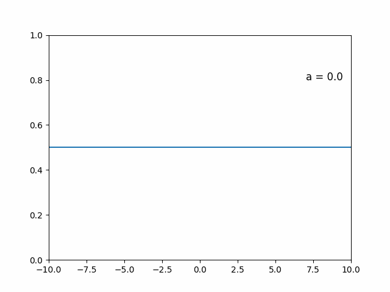
「直感的な」証明です(大声)
σ(bix+ci)\sigma(b_ix + c_i)σ(bix+ci)はbi=99999999999999999999999999999999999999b_i = 99999999999999999999999999999999999999bi=99999999999999999999999999999999999999
とすると、xi−cibix_i - \dfrac{c_i}{b_i}xi−bici がちょっともで正ならば111, そうでなければ000になる。
⇨ cic_iciを適当に調整すれば、狙った点tttで、
σ(bix+ci)={1(x>t)0(x≤t)\sigma(b_i x + c_i) = \left\{ \begin{array}{ll} 1 & (x > t) \\ 0 & (x \leq t) \end{array} \right. σ(bix+ci)={10(x>t)(x≤t)
とすることができる. (例: bi=10100,ci=1099⋅20b_i = 10^{100}, c_i = 10^{99} \cdot 20bi=10100,ci=1099⋅20 なら t=2t=2t=2)
bib_ibiを負のデカ数にすると、逆verもできる。
すると、 σ(bix+ci)\sigma(b_i x + c_i)σ(bix+ci)について、正の大きな数によってステップ関数にしたものと 負の大きな数によってステップ関数にしたものを足し合わせることで、 矩形関数を作ることができる。
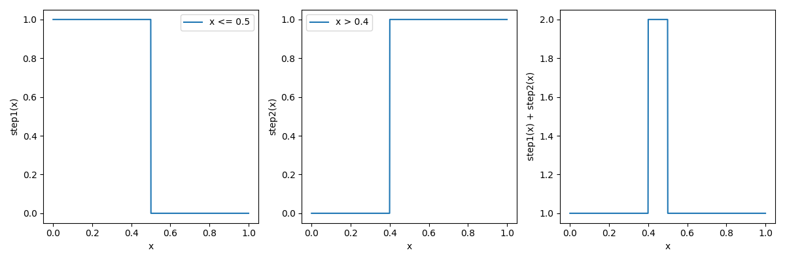
これさえできればもう近似できる！
連続関数を全てこれの和としてみればよい
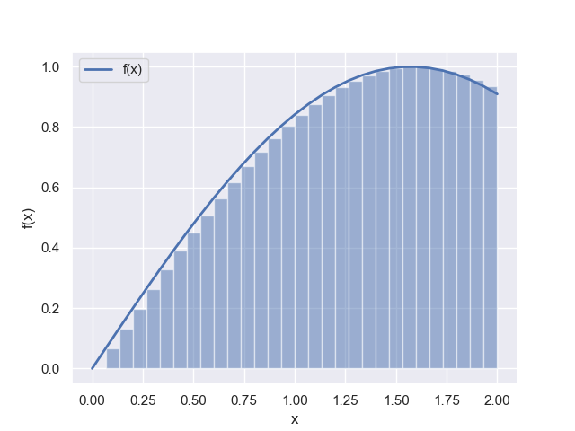
任意の連続関数を近似できるのはニューラルネットワークだけ？
⇨ NO
「万能近似ができるからニューラルネットワークがよくつかわれる」
+ あくまでそのようなai,bi,cia_i, b_i, c_iai,bi,ciが存在するという主張であって、 それを求める方法については何ら保証していない
⇨ ニューラルネットワークの優位性を考えるなら、もうちょい議論を進めていく必要がある (例えば今回は連続関数だけを考えたが実際に得たい関数は常にそうか？ai,bi,cia_i, b_i, c_iai,bi,ciの得やすさはどうか？)
traP アルゴリズム班 Kaggle部 2023/6/28
ニューラルネットワークは非常に多くのパラメータをもつ (全結合層は、W∈Rn×mW \in \mathbb{R}^{n \times m}W∈Rn×mとb∈Rmb \in \mathbb{R}^mb∈Rmのパラメータを持つ)
ニューラルネットワーク研究の歴史を遡ってみると...
1990年 ~ 2000年代ごろ
⇨ ニューラルネットワークはオワコン！
< :oisu-:
おしながき
勾配降下法... xn+1=xn−ηf′(xn)x_{n+1} = x_n - \eta f'(x_n)xn+1=xn−ηf′(xn)
をニューラルネットワークに適用するための色々な技法
初期化 (x0x_0x0を決める)
計算 (xn+1=xn−ηf′(xn)x_{n+1} = x_n - \eta f'(x_n)xn+1=xn−ηf′(xn)を計算する)
のそれぞれをカスタマイズします
ニューラルネット向けに書き直すとパラメータをならべたベクトルθ\bm{\theta}θと、θ\bm{\theta}θの関数である損失関数L(θ)L(\bm{\theta})L(θ)に対して θn+1=θn−η∇L(θn)\bm{\theta}_{n+1} = \bm{\theta}_n - \eta \nabla L(\bm{\theta}_n)θn+1=θn−η∇L(θn)と定義される式に沿って更新するという感じになります。
x0x_0x0はわれわれが決めなければいけなかった！ ⇨ どう決めるのがいいのか？
2010年、Xavierらが提案
Wi,j∼U[−1n,1n]W_{i, j} \sim U \left[-\sqrt{\dfrac{1}{n}}, \sqrt{\dfrac{1}{n}}\right] Wi,j∼U[−n1,n1]
(nnnは全結合層の入力の次元)
おきもち... 活性化関数の微分が「いい感じ」に働く分布になるよう初期値を置く
“Understanding the difficulty of training deep feedforward neural networks" [Glorot and Bengio, 2010] https://proceedings.mlr.press/v9/glorot10a/glorot10a.pdf
2015年、Kaiming Heらが提案
Wi,j∼N(0, 2n)W_{i, j} \sim \mathcal{N} \left(0, \ \sqrt{\dfrac{2}{n}} \right) Wi,j∼N(0, n2)
https://arxiv.org/abs/1502.01852v1
初期値の決め方は知見が蓄積されている
活性化関数などの性質によってこういう初期化がいい、みたいな知見もある
たいていの場合はフレームワークのデフォルトの初期化方法を使えばいいので、特にいじる場面は多くない(最近は特に必要性が薄れている...正規化層)
特殊なネットワークを作るときには、初期化方法をいじるといいかもしれない
損失関数は
L(θ)=1N∑i=1N(yi−f(xi;θ))2L(\bm{\theta}) = \dfrac{1}{N} \sum_{i=1}^N \left(y_i - f(\bm{x}_i; \bm{\theta})\right)^2 L(θ)=N1i=1∑N(yi−f(xi;θ))2
⇨ これを計算するには、NNN回の計算が必要 ⇨ データ数が少ない場合はいいが、数GB, TB, ......となっていく ⇨ メモリに乗り切らず実用的な速度で計算することが難しくなる！
例) データ数N=10000N=10000N=10000からs=100s=100s=100個のデータをランダムに選ぶ ⇨ メモリに乗り切って計算できる！
この選んだ小さいデータの集合のことをミニバッチと呼び、 そのサイズを バッチサイズ(batch size) と呼ぶ
そしてこれを使った勾配降下法を「確率的勾配降下法」という
確率的勾配降下法を単一データのみの損失を計算して行う手法と呼ぶ派閥もいるみたいですが、ミニバッチ学習に対しても確率的勾配降下法と呼ぶ人が多いと思います。
の、L(θn)L(\bm{\theta_n})L(θn)の計算はできるようになった！
Next
局所最適解 ... 付近では最小値だが、全体の最小値ではない 大域最適解 ... 全体で最小値
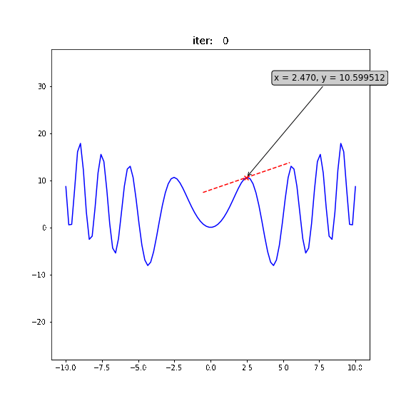
局所最適解にハマりにくい工夫された更新式をもつ色々なオプティマイザが提案されている
Adadelta,Adagrad,Adam,AdamW,SparseAdam,Adamax,ASGD,LBFGS,NAdam,RAdam,RMSprop,Rprop,SGD\small{Adadelta,Adagrad,Adam,AdamW,SparseAdam,Adamax,ASGD,LBFGS,NAdam,RAdam,RMSprop,Rprop,SGD}Adadelta,Adagrad,Adam,AdamW,SparseAdam,Adamax,ASGD,LBFGS,NAdam,RAdam,RMSprop,Rprop,SGD
他にも学習率(η\etaη)を変化させる手法など、いろいろと工夫されている
⇨ 基本的に、Adam(とその派生系)とSGDが使われることが多い (使い方は第6回でやります！)
⇨ こいつの「良さ」をどう定義するべきか
今までは、損失関数の値が小さいほど良いと考えていた(学習時)
例) アイスの値段予測をするモデルを作った！
学習の際に使ったデータは、 (20℃, 300円), (25℃, 350円), (30℃, 400円), (35℃, 450円), (40℃, 500円)
⇨ さぁこれを使ってアイスの値段を予測するぞ！ ⇨ 来るデータは....
(22℃, 24℃, 25℃, ......)
< なんか来月の予想平均気温30度って気象庁が言ってたな。 来月の売り上げが予想できたらどのくらい牛乳仕入れたらいいかわかって嬉しいな。
ところが、まだ答えが存在していないデータを使って学習を行うことはできない！ (なぜなら、答えがないので誤差が定義できない)
⇨ (20℃, 300円), (25℃, 350円), ... ,(40℃, 500円) に対して 妥当な推論が行えるようになったのなら、21℃や26℃に対しても「ある程度」妥当な推論が行えるようになっているはず
このように知らないデータに対しても推定が行えることを汎化といいます。かっこいいですね。この汎化をどのように実現するかと言うのが機械学習の主要な課題です。
学習後に関心があること: 未知のデータへの予測性能
⇨ これを検証しておこう
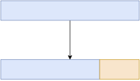
学習データ
(20℃, 300円), (25℃, 350円), (30℃, 400円), (35℃, 450円), (40℃, 500円)
学習データ (20℃, 300円), (25℃, 350円), (30℃, 400円)
検証用データ (35℃, 450円), (40℃, 500円)
のみで学習をおこなう
(35℃, 450円), (40℃, 500円)に対して推論を行い、誤差を評価
400円、500円と推論したとすると、 「検証用データに対する」平均二乗誤差は
12((400−450)2+(500−500)2)=1250\frac{1}{2} \left( (400 - 450)^2 + (500 - 500)^2 \right) = 1250 21((400−450)2+(500−500)2)=1250
のみで学習し、検証用データは学習に関与させない
これらは、学習とは全く独立した作業 ⇨ これの計算結果に基づいてモデルが影響を受けることはない
損失関数が満たす必要があった
などの条件は必要ない！
この検証用データに対して定義される評価の指標を 「評価指標」 という。
\ 重要 / \ 重要 / \ 重要 /
例) アイスの予測では損失関数として平均二乗誤差を使ったが、 別に評価指標が平均百乗乗誤差でもok.
逆にいえば評価指標は直接最適化の対象にはならない！
⇨ うまく設計された損失関数を使って、 評価指標の値を最適化できるように頑張る
つまり...
バリデーションの手法や切り方についてはいろいろあり、話すとかなり長くなりますのでここでは割愛します。メジャーなものだとCross Validationや時系列を意識したValidationなどがあります。
ニューラルネットワークの万能近似性から、(矛盾のないデータからうまく学習さえできれば) 学習時の損失を0にすることができる
⇨ 一方で、検証用データに対しては、損失が大きくなる場合がある
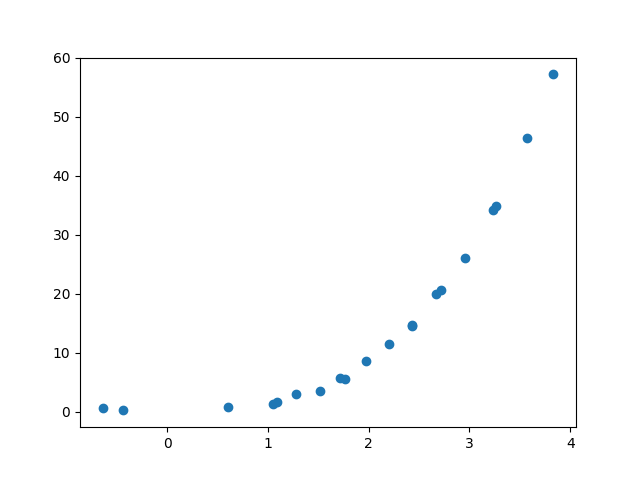
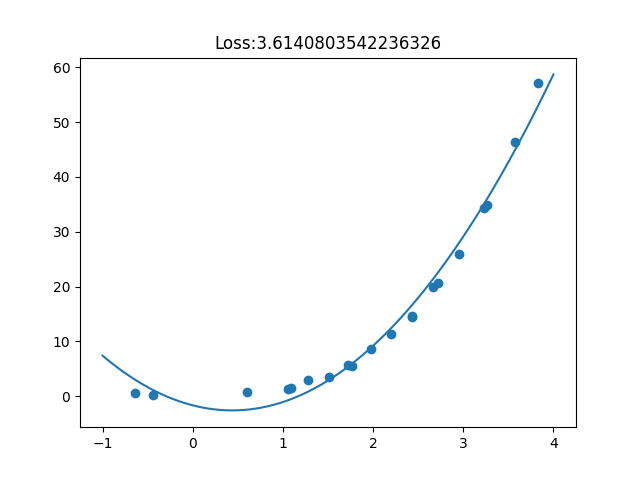
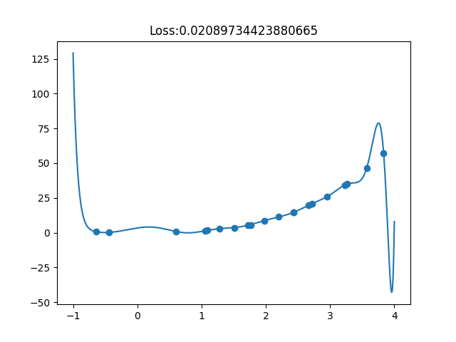
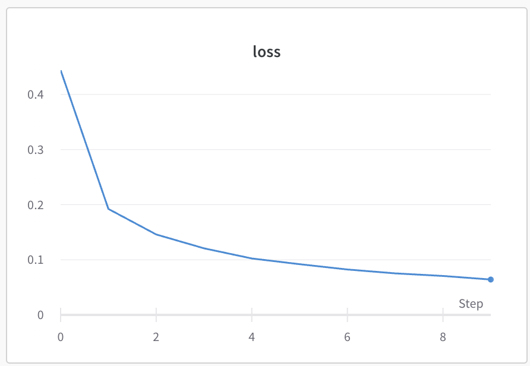
横軸... 学習ステップ 縦軸... 評価(学習時 or バリデーション)
< 「AI作りました！ちなみにどのくらいの精度で動作するかはわからないです笑」
⇨ きちんとバリデーションを行い、未知のデータに対する予測性能を評価することが大切
⇨ 逆に、適切にバリデーションを行なっていないが故の嘘に気をつけよう！！
Kaggleをはじめとするデータ分析コンペは、 「未知の情報」を予測するモデルの精度を競う
⇨ 試行錯誤している手法の、「未知の情報を予測する能力」(=汎化性能)をきちんと評価することが大切！！！！！！！！
< "A good CV is half of success." bestfitting
traP アルゴリズム班 Kaggle部 2023/7/3
第一回: 学習 第二回: 勾配降下法 第三回: 自動微分 第四回: ニューラルネットワークの構造 第五回: ニューラルネットワークの学習と評価
セルに、以下のコマンドを入力:
!curl -L https://abap34.com/ml-lecture/train.csv -o train.csv !curl -L https://abap34.com/ml-lecture/test.csv -o test.csv
はキッチンカーでアイスを売っています。 なるべく多くの売り上げをあげたいので、売り上げを予測する モデルを構築して、売り上げを予測することにしました。
そこで、ある日に行ったところの気温や降水量などの気象データ、いく地域の人口に占める子供の割合、アイスの値段などなどと、売り上げをまとめたデータを作りました。(train.csv)
そこで、 のために気象データや値段などから、売り上げを予測するモデルを作って、未知のデータ(test.csv)に対して予測してください！
予測結果を投稿して、精度を競えます！！！！すごい！！！！
自分のベストスコアを更新すると、激アツアニメーションが見れます！！！！すごいぜ！！！！！！！！！！！！！！！！！！！！！！！！
# pandasパッケージを`pd`という名前をつけてimport import pandas as pd # これによって、pandasの関数を`pd.関数名`という形で使えるようになる train = pd.read_csv("train.csv") test = pd.read_csv("test.csv")
pd.read_csv(path)で、pathにあるcsvファイルを読み込める
pd.read_csv(path)
path
パスとは、ファイルの場所を示す文字列のことです。 今回は、train.csvとtest.csvが、ノートブックと同じ場所にあるので、"train.csv"と"test.csv"という文字列をパスとして指定しています。例えば、"/home/abap34/train.csv"というパスを指定すると、"/home/abap34"というフォルダの中にあるtrain.csvというファイルを読み込みます。他にもノートブックの位置からの相対パスを指定することもできます。例えば、"../train.csv"というパスを指定すると、ノートブックの一つ上のフォルダにあるtrain.csvというファイルを読み込みます。
train
とだけセルに入力すると
test
今までは...
x = [1, 2, 3, 4, 5] y = [2, 4, 6, 8, 10] def loss(a): n = len(x) s = 0 for i in range(n): s += (y[i] - a * x[i])**2 return s / n
⇨ 今回のデータも入力と出力(の目標) に分けておく
train['カラム名']
で「カラム名」という名前の列を取り出せる
今回の予測の目標は
train['売り上げ']
セルに、
train_y = train['売り上げ']
と入力して実行
⇨ train_yに売り上げの列が入る
train_y
逆に、モデルに入力するデータは、trainから売り上げの列を除いたもの
train.drop(columns=['カラム名'])
を使うと、trainから「カラム名」という名前の列を除いたものを取り出せる
今回は「売り上げ」を除けば良いので、
train.drop(columns=['売り上げ'])
train_x = train.drop(columns=['売り上げ'])
⇨ train_xに売り上げの列を除いたデータが入る
train_x
今の状況...
が入っている
データをそのままモデルに入れる前に処理をすることで、 学習の安定性や精度を向上可能
今回は、 各列に対して「標準化」と呼ばれる処理を行う
x′=x−μσ\LARGE{x' = \frac{x - \mu}{\sigma}} x′=σx−μ
(μ\muμは平均、σ\sigmaσは標準偏差)
⇨ 標準化によって、平均を0、標準偏差を1にできる
scikit-learnというライブラリのStandardScalerを使うと、簡単に標準化できる！
scikit-learn
StandardScaler
# sklearn.preprocessingに定義されているStandardScalerを使う from sklearn.preprocessing import StandardScaler # StandardScalerのインスタンスを作成 scaler = StandardScaler() scaler.fit(train_x) train_x = scaler.transform(train_x) test = scaler.transform(test)
scalar.fit関数によって引数で渡されたデータの各列ごとの平均と標準偏差を計算され、scalarに保存されます。そして、scalar.transform関数によってデータが実際に標準化されます。勘がいい人は、「testに対してもtrain_xで学習した平均と標準偏差を使って標準化しているけど大丈夫なのか？」と思ったかもしれないですね。結論から言うとそうなのですが、意図しています。ここに理由を書いたら信じられないくらいはみ出てしまったので、省略します。興味がある人は「Kaggleで勝つデータ分析の技術」p.124あたりを参照してみてください。
scalar.fit
scalar
scalar.transform
などをセルに入力して実行してみると、 確かに何かしらの変換がされている (ついでに、結果が数字だけになっている)
ので、train_yも数字だけにしておく
train_y = train_y.values.reshape(-1, 1)
最初のテーブルっぽい情報を持ったまま計算を進めたい場合は、train_x[:] = scaler.transform(train_x)のようにすると良いです.
train_x[:] = scaler.transform(train_x)
(あんまり前処理には含めない人が多いと思いますが。。。。。。。。ここでやっておきます！)
scikit-learnのtrain_test_splitを使うと、簡単にデータを分割できる！
train_test_split
from sklearn.model_selection import train_test_split train_x, val_x, train_y, val_y = train_test_split(train_x, train_y, test_size=0.3, random_state=34)
train_test_split(train_x, train_y, test_size=0.3, random_state=34)
train_x.shape
val_x.shape
を確認すると、確かに7:3に分割されていることがわかる
このあとこれらをPyTorchで扱うので、PyTorchで扱える形にする
数としてTensor型を使って自動微分などを行える
⇨ データをTensor型に直しておく
torch.tensor関数によるTensor型のオブジェクトの作成
import torch train_x = torch.tensor(train_x) train_y = torch.tensor(train_y) val_x = torch.tensor(val_x) val_y = torch.tensor(val_y) test = torch.tensor(test)
我々が勾配降下法で使うのは、
⇨ 入力データに対する勾配は不要なので requires_grad=True とする必要はない
入力層は16次元の入力を受け取り、出力が32次元の全結合層 隠れ層は一つあり、32次元の入力を受け取り、出力が64次元の全結合層 出力層は64次元の入力を受け取り、出力が1次元の全結合層
import torch.nn as nn model = nn.Sequential( nn.Linear(16, 32), nn.Sigmoid(), nn.Linear(32, 64), nn.Sigmoid(), nn.Linear(64, 1) )
nn.Sequentialは、順番に層をつなげていくモデルを作るためのクラス 引数に層を順番に渡すことで、モデルを構築してくれる
nn.Sequential
⇨ すでにこの時点でパラメータの初期化などは終わっている
model.parameters()またはmodel.state_dict()でモデルのパラメータを確認できる
model.parameters()
model.state_dict()
を実行すると、モデルが持つパラメータ一覧を確認できる
構築したモデルは、関数のように呼び出すことができる
import torch dummy_input = torch.rand(1, 16) model(dummy_input)
torch.randで、ダミーのインプットを作成
torch.rand
⇨ モデルに入力
(現段階では、初期化されて学習されていない重みによる計算)
思い出すシリーズ
我々がやらなきゃいけないこと
...
torch.utils.data.Dataset
torch.utils.data.DataLoader
train_x, train_y, val_x, val_y, testをTensor型で保持している
val_x
val_y
# データセットの作成 train_dataset = TensorDataset(train_x, train_y) val_dataset = TensorDataset(val_x, val_y) # データローダの作成 batch_size = 32 train_dataloader = DataLoader(train_dataset, batch_size=batch_size, shuffle=True, drop_last=True) val_dataloader = DataLoader(val_dataset, batch_size=batch_size, shuffle=False)
Dataset
TensorDatasetに
TensorDataset
実際はtorch.utils.data.Datasetを継承したクラスを作ることでもDataset型(のサブクラス)のオブジェクトを作ることができます。この方法だと非常に柔軟な処理が行えるためこの方法が主流流です。(今回は簡単のためにTensorDatasetを使いました。)
Dataset型
from torch.utils.data import TensorDataset # データセットの作成 # 学習データのデータセット train_dataset = TensorDataset(train_x, train_y) # 検証データのデータセット val_dataset = TensorDataset(val_x, val_y)
DataLoader
つまり....
をやってくれる
DataLoader(dataset, batch_size=batch_size, shuffle=shuffle)
from torch.utils.data import DataLoader batch_size = 32 train_dataloader = DataLoader(train_dataset, batch_size=batch_size, shuffle=True, drop_last=True) val_dataloader = DataLoader(val_dataset, batch_size=batch_size, shuffle=False)
⇨ これをfor文で回すことでデータを取り出すことができる
for inputs, targets in train_dataloader: print('inputs.shape', inputs.shape) print('targets.shape', targets.shape) print('-------------')
inputs.shape torch.Size([32, 16]) targets.shape torch.Size([32, 1]) ------------- inputs.shape torch.Size([32, 16]) targets.shape torch.Size([32, 1]) ...
⇨ あとは学習を実装しよう！
今回は、平均二乗和誤差(Mean Squared Error)を使う ⇨ これもPyTorchには用意されている
criterion = nn.MSELoss()
とすれば、
criterion(torch.tensor([1.0., 2.0, 4.0]), torch.tensor([2.0, 3.0, 4.0]))
と計算してくれる！
1. 損失関数を設定する 2. 勾配の計算を行う 3. パラメータの更新を行う
やりかたは....？
# ここから import torch.nn as nn model = nn.Sequential( nn.Linear(16, 32), nn.Sigmoid(), nn.Linear(32, 64), nn.Sigmoid(), nn.Linear(64, 1) ) # ここまではすでに入力したやつ dummy_input = torch.rand(1, 16) dummy_target = torch.rand(1, 1) # 計算 pred = model(dummy_input) loss = criterion(pred, dummy_target) # backward loss.backward()
# backward loss.backward()
for param in model.parameters(): print(param.grad)
(dummy_input, dummy_targetはrequires_grad=Falseなので勾配は計算されない)
dummy_input
dummy_target
requires_grad=False
for epoch in range(epochs): for inputs, targets in train_dataloader: # 計算 outputs = model(inputs) loss = criterion(outputs, targets) # backward loss.backward() # ----------------------- # .... # ここにパラメータの更新を書く # .... # -----------------------
これまでは、我々が手動(?)で更新するコードを書いていた
(完成版ではないです！)
optimizer = optim.SGD(model.parameters(), lr=lr) # 学習ループ for epoch in range(epochs): for inputs, targets in train_dataloader: # 勾配の初期化 optimizer.zero_grad() # 計算 outputs = model(inputs) loss = criterion(outputs, targets) # backward loss.backward() # パラメータの更新 optimizer.step()
optimizer = optim.SGD(params, lr=lr) のようにすることで、paramsを更新の対象とするオプティマイザを作成できる(lrは学習率)
optimizer = optim.SGD(params, lr=lr)
params
lr
他にも、optim.Adamが使いたければ
optim.Adam
optimizer = optim.Adam(params, lr=lr)
とするだけでOK！
⇨ 勾配を計算したあと、optimizer.step()によってパラメータを 更新できる！
optimizer.step()
注意点
optimizer.step()で一回パラメータを更新するたびに optimizer.zero_grad()で勾配を初期化する必要がある！ (これをしないと前回のbackwardの結果が残っておかしくなる)
optimizer.zero_grad()
⇩ 次のページ...
n_epoch = 10 for epoch in range(n_epoch): running_loss = 0.0 for inputs, targets in train_dataloader: # 前の勾配を消す optimizer.zero_grad() # 計算 outputs = model(inputs) loss = criterion(outputs, targets) # backwardで勾配を計算 loss.backward() # optimizerを使ってパラメータを更新 optimizer.step() running_loss += loss.item() val_loss = 0.0 with torch.no_grad(): for inputs, targets in val_dataloader: outputs = model(inputs) loss = criterion(outputs, targets) val_loss += loss.item() # エポックごとの損失の表示 train_loss = running_loss / len(train_dataloader) val_loss = val_loss / len(val_dataloader) print(f'Epoch {epoch + 1} - Train Loss: {train_loss:.4f} - Val Loss: {val_loss:.10f}')
各行の解説...
for epoch in range(n_epoch)
n_epoch
running_loss = 0.0
for inputs, targets in train_dataloader
outputs = ...
13行目. loss.backward() .... 勾配の計算です。これによってmodelのパラメータに損失に対する勾配が記録されます
loss.backward()
model
16行目. optimizer.step() .... optimizerが記録された勾配に基づいてパラメータを更新します。
optimizer
18行目. running_loss += loss.item() .... 1バッチ分の損失をrunning_lossに足しておきます。
running_loss += loss.item()
running_loss
20行目~25行目. 1エポック分の学習が終わったら、検証データでの損失を計算します。検証用データの内容は、学習に影響させないので勾配を計算する必要がありません。したがって、torch.no_grad()の中で計算します.
torch.no_grad()
28行目〜30行目. 1エポック分の学習が終わったら、訓練データと検証データの損失を表示します。len(train_dataloader)は訓練データが何個のミニバッチに分割されたかを表す数、len(val_dataloader)は検証データが何個のミニバッチに分割されたかを表す数です。
len(train_dataloader)
len(val_dataloader)
32行目. 損失を出力します。
train_losses = [] val_losses = []
train_loss = running_loss / len(train_dataloader) val_loss = val_loss / len(val_dataloader) train_losses.append(train_loss) # これが追加された val_losses.append(val_loss) # これが追加された print(f'Epoch {epoch + 1} - Train Loss: {train_loss:.4f} - Val Loss: {val_loss:.10f}')
matplotlib というパッケージを使うことでグラフが書ける
matplotlib
# matplotlib.pyplot を pltという名前でimport import matplotlib.pyplot as plt
plt.plot(train_losses, label='train') plt.plot(val_losses, label='val') plt.legend() plt.xlabel('epoch') plt.ylabel('loss') plt.show()
⇨ いい感じのプロットを見よう！
testに予測したい未知のデータが入っている
model(test)
⇨ 予測結果が出る
import csv def write_pred(predictions, filename='submit.csv'): pred = predictions.squeeze().tolist() with open(filename, 'w', newline='') as f: writer = csv.writer(f) writer.writerows([[x] for x in pred])
をコピペ →
write_pred(predictions)を実行すると、submit.csvというファイルが作成されて、予測結果が出力される！！ ⇨ これを提出しよう！
write_pred(predictions)
submit.csv
batch_size
n_epochs
traP アルゴリズム班 Kaggle部 2023/7/4
第1回: 学習 第2回: 勾配降下法 第3回: 自動微分とPyTorch 第4回: ニューラルネットワークの構造 第5回: ニューラルネットワークの学習と評価 第6回: ニューラルネットワークの学習 第7回: ニューラルネットワーク発展
モデル ⇩ 損失関数 ⇩ 勾配降下法 ⇩ 自動微分 ⇩ ニューラルネットワーク
例: 線形回帰は閉形式解がある
θ^=(XTX)−1XTy\hat{\bm{\theta}} = (\bm{X}^T \bm{X})^{-1} \bm{X}^T \bm{y} θ^=(XTX)−1XTy
他にも...
他のモデル
f(x;θ)f(\bm{x}; \bm{\theta})f(x;θ)
などなど...
ニューラルネットワークの発展系
畳み込みニューラルネットワーク(CNN) 画像を入力とするネットワークなどで使われる
Transformer 自然言語処理で使われ始め、近年非常に広い分野で使われる。 広い視野で情報を取れる。とても強い。既存のネットワークをつぎつぎに置き換える性能
拡散モデル ニューラルネットワークを使ってデノイズを繰り返すことで極めて精巧な画像を生成することができる
今まではアイスの予測を主に扱ってきた
= 実数のベクトルから実数一つへの関数の構築 (Rn→R\mathbb{R}^n \to \mathbb{R}Rn→R)
実際はいろいろなタスクがある
教師あり学習 出力の目標が存在していて、それを達成するように学習する
教師なし学習 明示的な出力の目標を人間が与えない、クラスタリングなど
強化学習 環境との相互作用を通して学習する.ゲームAIなど
実践的な機械学習・データ分析の経験が身につく
日本のコンペプラットフォームもある
< Kaggleがやりたければ...Kaggle部にこい！！
などなど....
告知:
ぜひ参加しましょう
> 大抵はそうなのですが、固定幅で収束が早いという主張の手法もあったりして(https://arxiv.org/abs/2302.06675) 一概には言えないのですが、大体この通りであることは確かです。